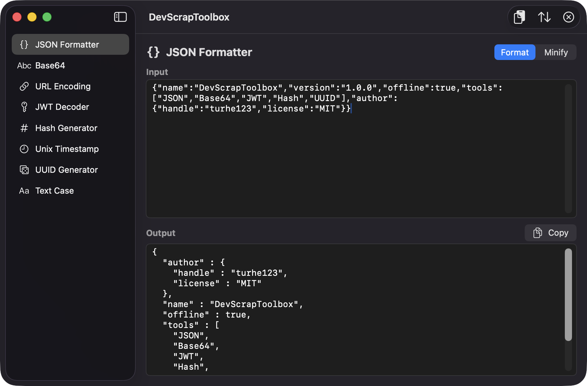
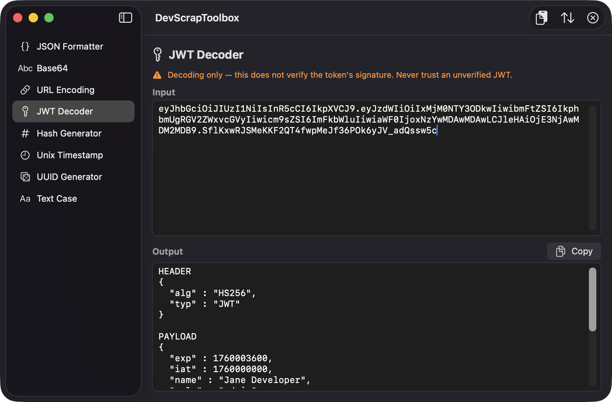
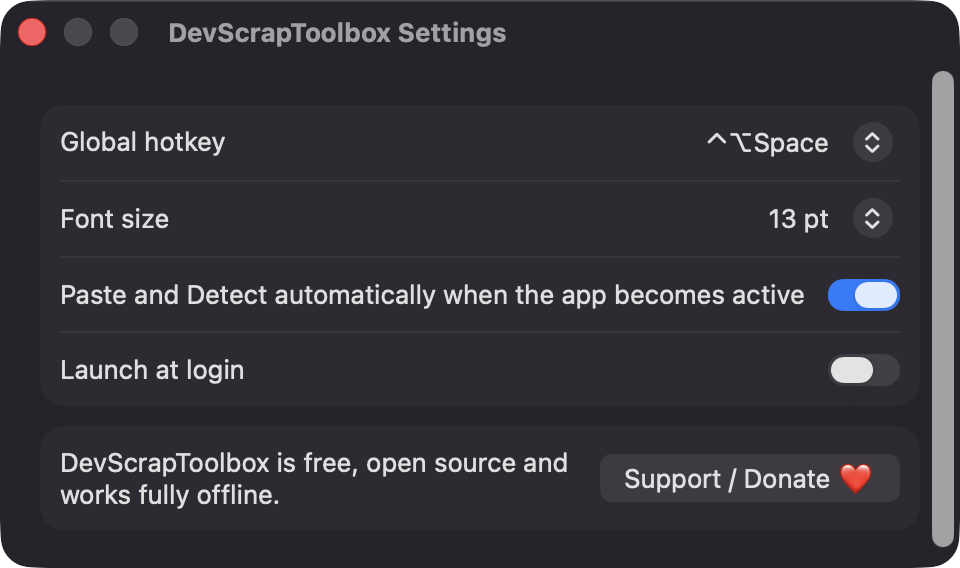
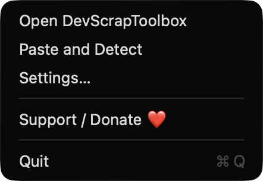

Paste and Detect
Reads your clipboard, guesses whether it is JSON, a JWT, a timestamp, URL-encoded or [removed], and opens the matching tool with the content already filled in.
Open source · macOS 14+ · Universal binary · Developer & Network
DevScrapToolbox formats JSON, decodes JWTs, hashes files and converts timestamps, all offline. Press Shift-Command-V and it opens the right tool Control-Option-Space summons it from anywhere.
Free & MIT licensed · Apple Silicon & Intel · Latest release

Features
Each tool has an input pane, an output pane and a copy button, so the common conversions take seconds.
Reads your clipboard, guesses whether it is JSON, a JWT, a timestamp, URL-encoded or [removed], and opens the matching tool with the content already filled in.
Pretty-print with sorted keys or minify. Invalid input reports the line and column, and large files are processed off the main thread with a progress indicator.
Shows header and payload as readable JSON, converts exp, iat and nbf to dates and flags expired tokens. It states clearly that the signature is not verified.
MD5, SHA1, SHA256 and SHA512 of text or a dropped file, up to 10,000 UUIDs at once, seconds or milliseconds timestamps in local and UTC, and camel, snake, kebab or upper case.
Bring up the window from any app with a hotkey you choose in Settings, or use the menu bar item for Open, Paste and Detect, Settings and Support.
No network calls, no analytics and no third-party dependencies. Only Apple frameworks, and your data never leaves your Mac.
Screenshots



Install
DevScrapToolbox is open source and not notarized with a paid Apple Developer ID, so macOS needs one extra step the first time.
xattr -cr /Applications/DevScrapToolbox.app
Download
Free, forever. Built for macOS 14 Sonoma or newer, Apple Silicon and Intel.
Not notarized: on first launch right-click DevScrapToolbox.app → Open.
FAQ
Yes. It is released under the MIT license and the full source is on GitHub. If it saves you time, there is an optional Support button in Settings and the menu bar.
None. It does not use Accessibility, Screen Recording or Microphone access. It reads the clipboard only when you use Paste and Detect or when auto-detect is on, which you can turn off in Settings.
Nothing you paste is saved or sent anywhere. Only your preferences, such as hotkey and font size, are stored locally on your Mac.
Notarization requires a paid Apple Developer account. Right-click the app and choose Open once to get past Gatekeeper, or build it yourself from source with Xcode and XcodeGen.
Yes. DevScrapToolbox was generated by Claude Code from a written spec as a clean-room reimplementation, with no code or assets from any commercial app. The full source is on GitHub under MIT, so you can read every line before you run it. It has had less human review than a hand-written app, so bug reports are welcome.
Support ❤️
DevScrapToolbox is a free, open-source alternative to paid utilities. If it earns a spot on your Mac, a coffee keeps the updates coming.
☕ Support Or on Ko-fi